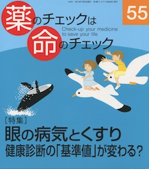

No.55 [特集] 眼の病気とくすり 健康診断の「基準値」が変わる？ 2014年7月 発行

特集は２つ
眼の病気とくすり ---------- とくに緑内障を取り上げました。
眼圧が低くても下げることが治療として行われています。
じっくりと臨床試験や監察権強を調べました。
もうひとつの特集は、健康診断の基準値とは？
基準値を少し厳しくするだけで、「患者」が増えます。
だれのための基準値なのでしょうか？
常識に流されず、国や専門家を信じすぎず、
自分の頭で判断する力を養う手段に、本誌をどうぞ。
もくじ
Main Feature 特集 眼の病気とくすり
特集を読む、その前に・・・ 編集部
眼の構造とはたらき 浜 六郎
正常眼圧の緑内障は治療が必要か？
眼の感染症、炎症とその治療
Q & A
①鏡を見ていたら後方がピカッと光った
②ブルーベリーは目にいい？
薬剤の害反応による眼の病気 大津史子
アバスチンに危険はないか？ 浜 六郎
薬剤リスト
①緑内障用の薬剤
②それ以外の薬剤
Topics トピック
国際グループの最新研究結果
タミフルの無効と害 浜 六郎
Overseas 海外情報
FDAが更年期治療にパロキセチンを承認 木元康介
Second Feature 第２特集 検査基準値
人間ドック学会の提示した新基準は画期的 編集部
血圧とBMIについて 浜 六郎
ちょこっとQ & A
コレステロールと血糖 大櫛陽一
低下剤でぼろぼろになった 福田 実
Series 連載
■ 医師国家試験に挑戦しよう！(21) 木元康介
■ 新・市民の視点 市民の立場で医薬品をコントロールするために 栗岡幹英
■ コーヒー無礼区 わかっちゃいるけど… 坂口啓子
■ リレーエッセイ 「薬情」に書いてありそうで無かった情報 北澤京子
■ みんなのやさしい生命倫理(55) 生老病死(25) 谷田憲俊
■ 医師国家試験の解答と解説
Others
読者の声
書評
バックナンバー一覧 ／ 書籍申込用紙
編集後記/奥付
お知らせ：次号予定／英字紙発行に向けて